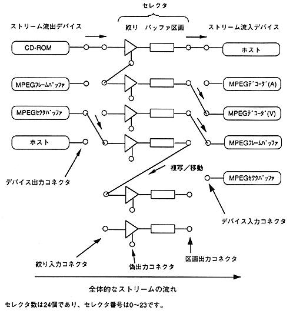

[Description of each part] (A) Device: Generates and absorbs a stream. (Stream outflow / inflow device) (B) Selector: Consists of an aperture and a buffer section, and selects a stream. (C) Aperture: The stream is separated according to the set conditions. (Matches / does not match the conditions) (D) Buffer section: Stores the stream and releases / deletes data according to external requests.
∙ Each device and selector has a connector for connection. Connect the input / output connectors of the device and selector one-to-one. You can also connect between selectors.
∙ Streams flow constantly for connections between connectors that do not pass through the compartment. Stops when entering the parcel. Sectors output from unconnected output connectors are erased.
∙ Be sure to connect devices through the selector. The device output connector can only be connected to the aperture input connector, and the device input connector can only be connected to the partition output connector.